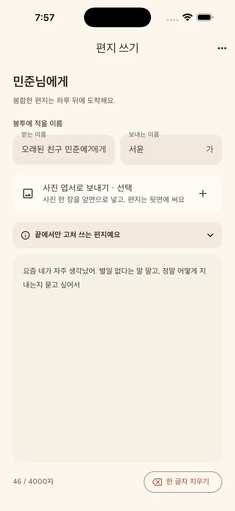
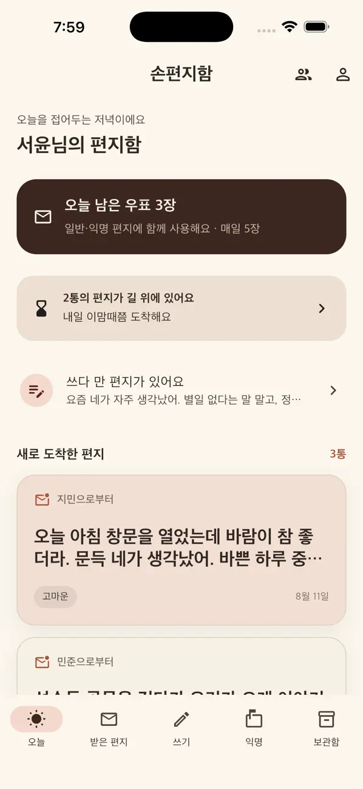
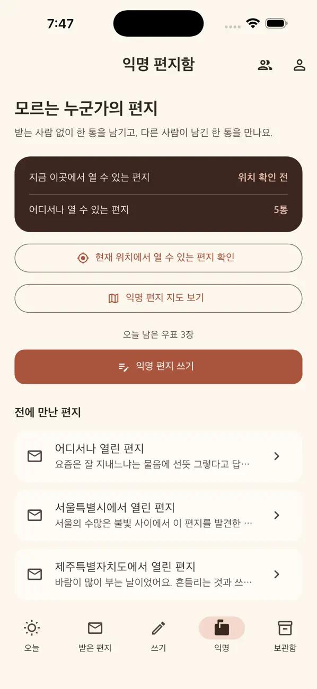
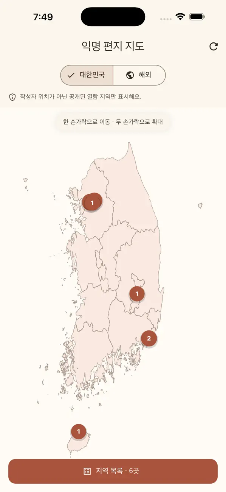

느린 배송
하루쯤, 기다림.
봉함한 편지는 약 하루 뒤 도착해요. 읽음 표시 없이, 답장을 재촉하지 않아요.


작은 생각에서 시작된 앱.
하루를 기다려 도착한 편지.
지역이 정해진 편지는 받은 지역에서만 열 수 있어요.
기다림에, 그곳의 기억까지 담아보세요.
마음을 쓰는 시간
복사해 붙여넣기 없이, 문장 끝에서 한 글자씩. 손편지를 쓰듯 다음 문장을 천천히 고르게 되는 편지 에디터입니다.
느린 배송
봉함한 편지는 약 하루 뒤 도착해요. 읽음 표시 없이, 답장을 재촉하지 않아요.
지역에서만 열리는 편지
지역이 정해진 편지는 받은 지역에서만 열 수 있어요. 그 지역에 있어야 읽을 수 있어서, 편지에 장소의 기억도 함께 남아요.
편지 보관함
받은 편지를 보관하고, 생각나는 날 다시 열어봐요. 오래 남기고 싶은 문장들을 모아요.
익명 편지함
받는 사람 없이 편지 한 통을 남기고,
다른 누군가가 남긴 편지 한 통을 만나보세요.
어디서나 열 수 있는 편지도,
지정된 지역에 도착해야 열리는 편지도 있어요.


앱, 그리고 소설.
손편지함을 둘러싼 단편소설과,
빠른 메시지 대신 느린 편지를 만들게 된 이유.
손편지함
iOS · Android